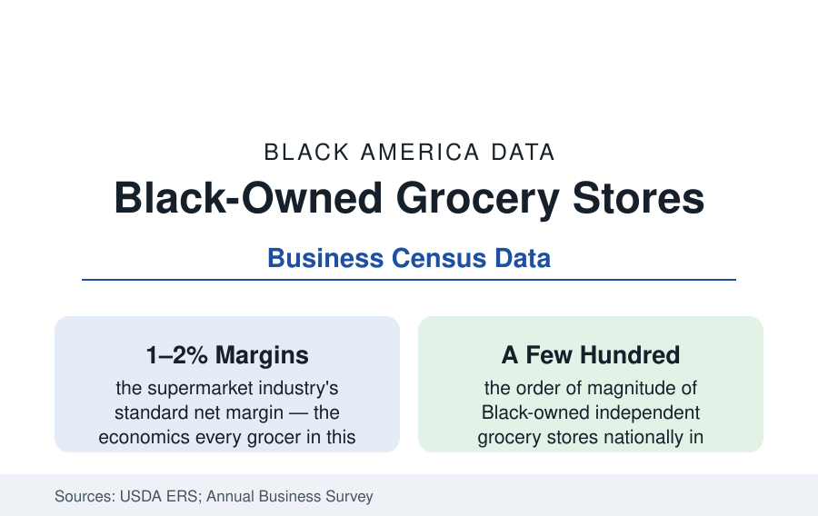

Black Business
Black-Owned Grocery Stores: The Hardest Retail in America, Held Anyway
Fewer than a dozen Black-owned supermarket chains and a few hundred independent grocers serve a population of 47 million. The data of food retail's steepest climb.

Every business in this section is hard; the grocery business is the one where the math itself is the opponent. Supermarkets run on net margins of one to two percent, in buildings that cost millions, stocked with perishables that expire on a clock, against chains whose buying power sets wholesale prices a small operator cannot match. Black grocers have run that gauntlet for a century — from the cooperative stores of the movement era to the independent operators holding neighborhoods the chains abandoned — and the sector's small census is not a measure of effort. It is a measure of the gauntlet. This article reports the grocery file.
The Sector's Shape: Independents, Regionals, and the Missing Chains
The Annual Business Survey's grocery slice and the trade directories draw the profile: Black ownership in food and beverage retail concentrates in small-format stores — the neighborhood groceries, meat markets, and convenience formats — with the full-scale supermarket tier held by a thin line of regional operators whose names the trade press knows (the multi-store independents of the Midwest, South, and mid-Atlantic, several grown from a single family store into small chains of five to twenty locations). The historical depth matters to the count: the mid-century had more — the cooperative and independent supermarkets of the Black commercial districts, the Progressive Grocers-era operators, the chains built by figures like the Memphis and Chicago grocers of the record — and the supermarket revolution's consolidation (the regional chains absorbed, the inner-city stores closed in the redlining decades) cut the Black sector as it cut every independent tier, with the capital file's documented racial gradient determining who could buy the survivors. The result in the current directories: a population of 47 million served by a Black-owned full-service grocery infrastructure countable in the low hundreds of stores — the food-access data's supply side.
The Economics: Why Grocery Is Different
The sector's unit economics explain its rarity in the data's own terms. The wholesale tier is the first wall: independent grocers buy through cooperatives and wholesalers at prices the vertically integrated chains undercut by design, compressing the gross margin before a single cost is paid. Capital intensity is the second: a modern supermarket's build-out runs to eight figures, its refrigeration and systems a standing maintenance economy, its inventory a perishable loan. The labor file (the union and wage data of the retail article) and the shrink file complete the squeeze — and the location economics cut hardest along the map the food-insecurity article draws: the neighborhoods with the least grocery access are precisely those whose per-store revenue projections the chains' models reject, leaving the independent — often Black, often family-capitalized — as the operator of last resort at the thinnest margins in the file. The public programs aimed at the gap (the Healthy Food Financing Initiative's loans and grants, the state and city grocery funds, the CDFI lenders of the financing article) constitute the policy ledger, with the funded stores' survival data as its scorecard.
The New Models: Co-ops, Nonprofits, and the Hybrid Aisle
The current decade's entries experiment around the margin wall: the cooperative grocery (community-owned stores in the tradition of the movement-era co-ops, reviving in the food-access neighborhoods with member capital and patient governance), the nonprofit and social-enterprise supermarket (subsidized operations whose funders underwrite the margin the neighborhood cannot), the small-format fresh store (the produce-anchored mini-market whose economics a single owner can carry), and the hybrid plays — the grocer-developer partnerships where public land and tax structure close the financing gap (the city-brokered deals that brought full-service stores back to several majority-Black districts in the current record). The e-commerce tier resets the board again: the delivery platforms' grocery channels give a small store a digital storefront without a fleet, while the platform fees enter the margin math on the other side. The trade's own institutions — the National Grocers Association's independent networks, the Black grocers' informal mutual-aid of shared wholesaler intelligence — form the sector's connective tissue.
Reading the Grocery Data
Count the sector and you count a few hundred stores. Read it and you find the food system's conscience at retail scale: the operator who opens where the models say don't, on margins the textbooks call impossible, because the neighborhood is his own. The grocery file's question for the next decade's data is whether the financing and wholesale structures bend — or whether the count stays where the gauntlet leaves it, and the access map with it.
More in Black Business
Black-Owned Businesses: Counts, Receipts, and the Representation Gap
About 161,000 Black-owned employer firms and three million solo ventures: how the Census Bureau counts Black business ownership, where firms concentrate, and the gap between population share and business share.
Black Median Net Worth: The Wealth Gap in Federal Reserve Data
The Federal Reserve puts Black median family net worth at $44,900, against $285,000 for White families — about 16 cents on the dollar. The widest gap in economic data.
Black Buying Power: The $1.8 Trillion Consumer Economy
Black buying power is estimated at about $1.8 trillion — larger than the economy of most nations. What the figure measures, who produces it, and what it buys.
Source: U.S. Census Bureau Annual Business Survey; USDA Economic Research Service; National Supermarket Association and industry directories; company and trade-press records.